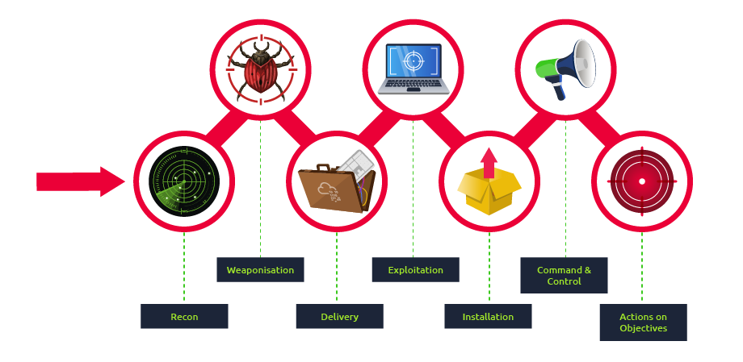

A core function of the red team is adversary emulation. While not mandatory, it is commonly used to assess what a real adversary would do in an environment using their tools and methodologies. The red team can use various cyber kill chains to summarize and assess the steps and procedures of an engagement. The blue team commonly uses cyber kill chains to map behaviors and break down an adversaries movement. The red team can adapt this idea to map adversary TTPs (Tactics, Techniques, and Procedures) to components of an engagement.
Many regulation and standardization bodies have released their cyber kill chain. Each kill chain follows roughly the same structure, with some going more in-depth or defining objectives differently.
The Lockheed Martin kill chain focuses on a perimeter or external breach. Unlike other kill chains, it does not provide an in-depth breakdown of internal movement.
You can think of this kill chain as a summary of all behaviors and operations present.
| Technique | Purpose | Examples |
|---|---|---|
| Reconnaissance | Obtain information on the target | Harvesting emails, OSINT |
| Weaponization | Combine the objective with an exploit. Commonly results in a deliverable payload. | Exploit with backdoor, malicious office document |
| Delivery | How will the weaponized function be delivered to the target | Email, web, USB |
| Exploitation | Exploit the target's system to execute code | MS17-010, Zero-Logon, etc. |
| Installation | Install malware or other tooling | Mimikatz, Rubeus, etc. |
| Command & Control | Control the compromised asset from a remote central controller | Empire, Cobalt Strike, etc. |
| Actions on Objectives | Any end objectives: ransomware, data exfiltration, etc. | Conti, LockBit2.0, etc. |